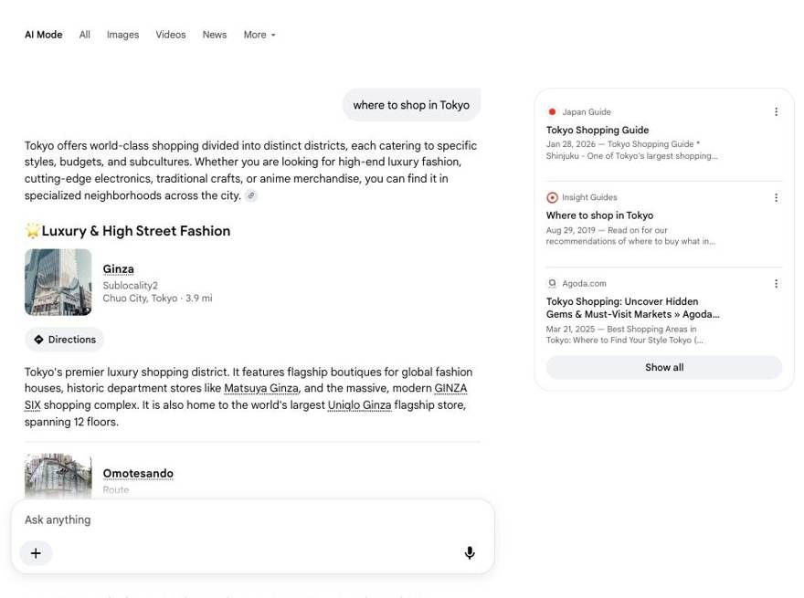
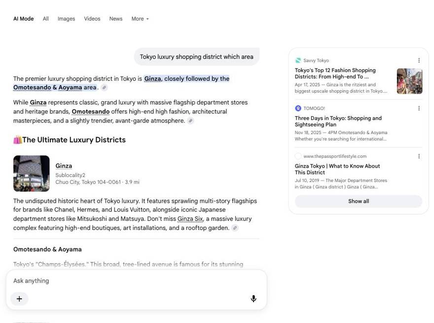
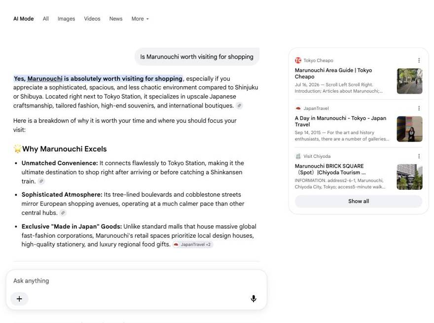
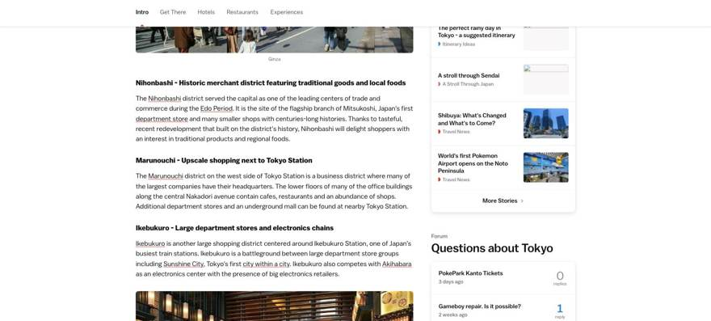
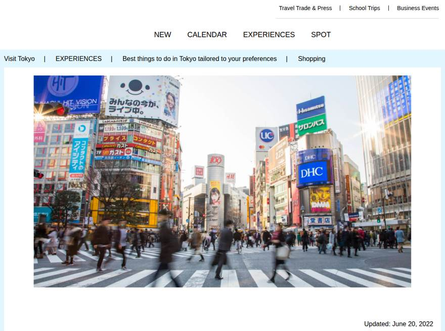
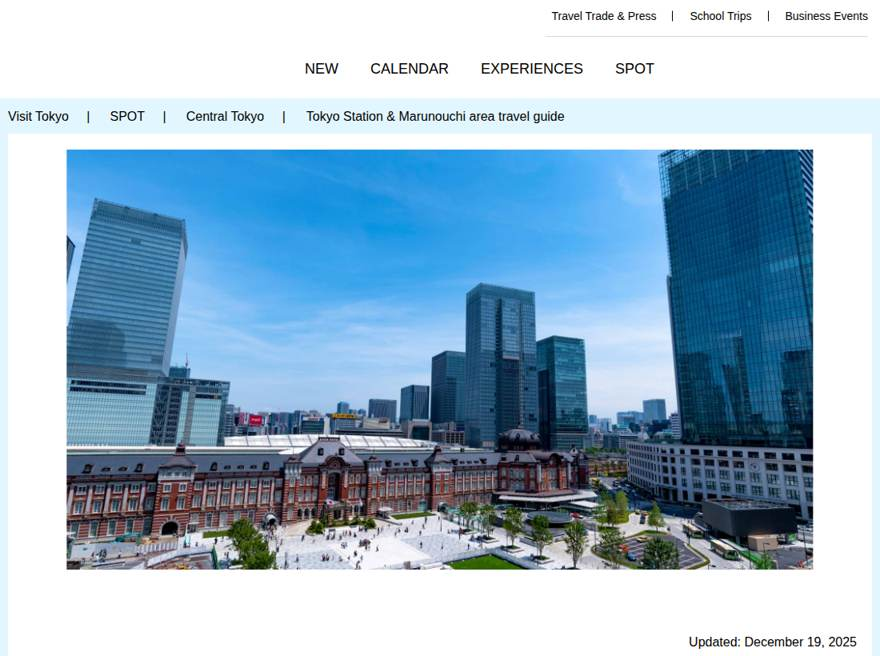
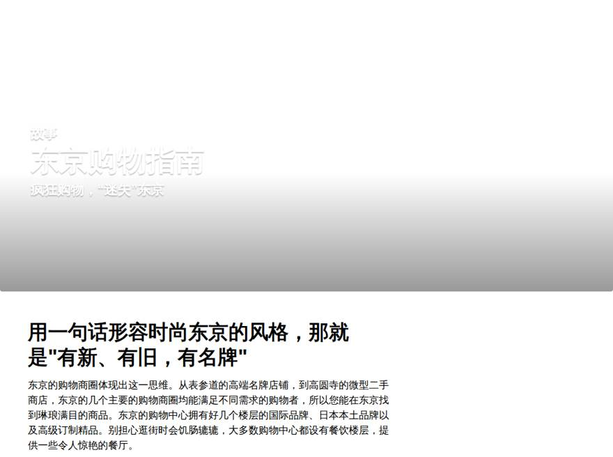

1概要・示唆
取扱高の上位2施設（新丸ビル＋丸ビル）で43.4%、上位5ヶ国で53.8%。集中度が高く、「どの国×どの施設」を動かすかを特定しやすい構造。国別・施設別の掛け算はセクション4のクロス分析で。
| # | 示唆 | 根拠データ | 詳細 |
|---|---|---|---|
| 1 | KPIは「達成できない」のではなく「測れていない」。実測年換算69.0億は目標44.3億の156%。計測定義の刷新が最初の意思決定。 | 実測×KPI設定値 | 本頁ツリー |
| 2 | 単価×国ミックスが最大のレバー。客単価は想定の47%。単価最高の中国が訪日−56%の逆風のいま、米(単価17,600円・訪日+6.5%)・SG(14,519円・+10.3%)の比重引き上げが現実解。 | 実測×JNTO | 3・9・10 |
| 3 | 欧米豪・SGでは既に「勝ちパターン」が存在する。訪日客の3〜4%が大丸有で決済（英4.3%・SG4.3%・米3.6%）。この再現条件を韓台に移植できれば量が跳ねる。 | 実測×JNTO | 9 |
| 4 | 買い回り率1.4%はまだ「点」の消費。起点→併用の実測ペア（ADRIFT→エシレ等）は存在するが希薄。仲通り軸の回遊設計と全店舗ペア集計の取得で面の消費へ。 | 実測サンプル | 6 |
| 5 | 認知の入口（検索・AI）で「買い物の街」として語られていない。定番ガイド10本中、丸の内掲載1本。GO TOKYO・JNTO公式のショッピング特集からも脱落。掲載交渉＋多言語コンテンツが最短ルート。 | 検索面実測106件 | 11 |
2KPI月次
銀聯は件数1.1%だが件単価36,109円と全体平均(12,205円)の3.0倍。中国本土の高額消費はカード枚数でなく単価で効いている——中国訪日−56%局面でも単価層の維持が優先。
3国別
右上（人数も単価も高い）が不在なのが大丸有の現在地。米国は人数首位だが単価11,545円と平均以下、単価上位の中国(28,483円)・台湾(20,517円)は人数が細い。「米国の単価を上げる」か「中華圏の人数を戻す」かで打ち手が全く異なる——スコアリング（セクション10）で優先順位を判定。
4クロス分析
このマトリクスが定常受領後の主戦場。例えば「新大手町ビル（件単価6.3万円）×中国・SG」のセルが立てば高単価戦略の検証になり、「オアゾ×韓国」が立てば量販導線の検証になる。毎月このセルの増減で施策の当たり外れを判定する運用を推奨。
5施設・店舗
新大手町ビル（件単価62,877円）と丸の内仲通りビル（53,921円）は件数が少なく単価が桁違い＝ラグジュアリー枠。一方オアゾは人数3,251人で件単価4,256円の量販枠。同じ「施設」でも役割が3類型（ラグジュアリー/基幹/量販）に分かれており、KPIも施策も類型別に設計すべき。
6買い回り
実測ペアの併用率は1.42%——ラグジュアリーレストラン（ADRIFT）で食事しても98.6%はその1軒で完結している。飲食→物販の動線（例: 二重橋→仲通りDIOR）は「存在するが極細」。回遊の太さ＝面の消費額なので、①仲通り軸の回遊特典 ②レシート連動クーポン ③コンシェルジュ接客連携 の効果検証を、このペア表の月次変化で行う設計にする。米国83%が1施設のみ（利用施設数分布）＝伸びしろは欧米の「2施設目」。
7リピート・定着
設計上の見どころ: 韓国は翌月再利用12.4%と近距離リピート型、米国は5.8%だが1回の滞在で高額——「リピートで積む国」と「1回で獲りきる国」でCRM設計が真逆になる。受領後、この2類型の実数確定が最初の分析。
8滞在・単価
「継続利用」実測で新丸ビル1,734人・丸ビル1,386人が2ヶ月連続で決済している——観光客では説明できない層＝中間（長期滞在/反復）・居住者候補が既に固定客化している証拠。設計値では中国の累計20万円超が9%：購買額レンジ×国の実数が届けば「大丸有の外国人上顧客」の定義（例: 月2回以上 or 累計20万円超）を初めて置ける。
9市場・オープンデータ
英・SGは訪日客の4.3%、米3.6%、仏3.3%が大丸有で決済——欧米豪・SGに対しては東京駅直結×ラグジュアリー×落ち着いた街並みが既に刺さっている。一方韓国0.6%・台湾0.3%・中国0.4%と東アジアのボリューム市場をほぼ取りこぼしており、ここに銀座・新宿から1%奪うだけで年数億円規模が動く。訪日回復局面（7月+0.1%転換）の受け皿づくりが急務。
| ファクト | 数値 |
|---|---|
| 買物代の国別最大は中国 | 7,619億円（買物代比率38%） |
| 1人当たり買物代の最高はSG | 100,620円/人 |
| 2026年4-6月期 消費額首位が交代 | 米国3,848億円が初の首位 |
| 1人当たり旅行支出の上位 | 独39.2万・英39.1万・豪38.7万円 |
| 訪日客のカード利用率 | 59.5%（観光庁2019・最新公的値） |
| 買物場所「百貨店・デパート」利用 | 55.6%（同上） |
| Torch Tower竣工（大丸有の次の核） | 2028年3月末予定・約385m |
10ターゲットスコア
| 軸 | 重み | 使用データ | 出所 |
|---|---|---|---|
| ① 現在の規模（大丸有取扱高） | 25点 | 2026-05 国別取扱高 | ニコス実測 |
| ② 未捕捉ポテンシャル（東京買物市場−大丸有実績） | 25点 | 国別買物代×東京シェア48% − 年換算取扱高 | 観光庁×実測 |
| ③ 市場モメンタム（訪日客数 前年比） | 20点 | 2026年1-7月 国別前年比 | JNTO |
| ④ 大丸有での客単価 | 15点 | 2026-05 取扱高÷人数 | ニコス実測 |
| ⑤ 旅行支出力（1人当たり訪日支出） | 15点 | 2025年 国別1人当たり旅行支出 | 観光庁確報 |
1位米国——規模首位×成長+6.5%×支出力34.0万円/人で、唯一の弱点が大丸有単価11,545円。「米国の単価を上げる」が最小の力で最大の売上を動かすレバー（ラグジュアリー枠・体験型への誘導）。2位中国はポテンシャル・単価とも最大だがモメンタム最低（訪日−56.3%）＝2026年は単価維持と小紅書の種まきに徹し回復局面で刈る仕込みの年。3位台湾は成長+21.8%×買物性向32.9%なのに捕捉率0.27%と受け皿不足——繁体字の情報発信が最も費用対効果が高い。
11AI・検索可視性



→ AIは丸の内を「語れない」のではなく「聞かれ方が非指名のとき、候補集合に入っていない」。トヨタGEOで言う出現率の問題であり、引用可能な素材（marunouchi.com・Visit Chiyoda・Tokyo Cheapo）は既にAIに認識されている。非指名テーマの多言語コンテンツと定番ガイドへの掲載が効く構造。




全市場で語られる中身は驚くほど一貫して①東京駅駅舎の写真 ②冬イルミ（仲通り） ③無料展望（KITTE屋上・新丸ビル7F） ④エシレ等の限定グルメの4点に収れんする——つまり海外ローカル圏では丸の内は「無料で写真を撮る場所」であり、「買う場所」の語彙をまだ持っていない。小紅書は「丸之内」のSEO可視面が不在（6系統検索で未検出、対照群の銀座は集約ページ露出＝手法正常。RED内部はクローラ遮断のためGoogle可視面での判定）。携程・大衆点評には地区POI自体が無い。一方で韓国はkr.trip.comにガイド52件と最も厚く、TripAdvisorでは「欧風・静か・上質」評が確立済み（仲通り4.1点/133件、ただし銀座4,808件の1/36）。勝ち筋は既にある評判「銀座の隣の、空いていて上質」を、無料フォトスポット→高単価購買へ接続する動線設計にある。
①公式2媒体（GO TOKYO・JNTO）のショッピング特集への掲載交渉——DMO・行政渉外で解ける領域で、タイ語圏はGO TOKYOが検索1-2位を独占しているため即効性最大。②横展開リスト記事への働きかけ——hotels.com Go Guides・Time Out・MATCHA・triple.guide(韓)・乐吃购(中)。japan-guideに既に丸の内セクションがある＝素材が揃えば載る証明。③Uncover Marunouchiで非指名テーマの多言語記事——「Tokyo luxury shopping」「東京駅 買い物」を英・繁/簡・韓・泰で。丸の内が構造的に勝てる切り口は「銀座の隣の、静かなラグジュアリー」「東京駅直結」。
?読み方ガイド
オープンデータ JNTO・観光庁・東京都など公的一次統計の実数。
実データ×ダミー配分 合計は実測、内訳の配分だけ生成値（ID紐付け未受領のため）。
ダミー 受け皿デモ用の生成値（乱数シード20260521固定）。本受領後に差し替え。
- 件数 / 利用人数 / 取扱高
- 決済件数 / ユニーク人数（カードベース近似）/ 決済金額（円）。客単価=取扱高÷人数、件単価=取扱高÷件数。
- 顧客区分
- 観光客候補（短期滞在）/ 中間（長期滞在・反復利用）/ 居住者候補。ニコスがカード利用パターンから判定。
- DCC
- 自国通貨払いサービス。現行KPIの計測基盤だが、海外発行カード決済全体の約9%しか捕捉していない。
- 捕捉率
- 大丸有の年換算取扱高 ÷（国別の訪日買物代×東京シェア48%）。「東京での買物市場のうち大丸有が取れている割合」の概算。
| # | 集計の名前 | 何がわかるか | 見る場所 | 状態 |
|---|---|---|---|---|
| ① | リピート率 | また来てくれているか（翌月・3ヶ月以内の再利用） | 7 リピート・定着 | 依頼中（現在はイメージ値） |
| ② | 利用回数の分布 | 月に何回使う客層か（1回きり／常連の比率） | 7 リピート・定着 | 依頼中 |
| ③ | コホート残存 | 初めて来た月の客が、翌月以降どれだけ残るか | 7 リピート・定着 | 依頼中 |
| ④ | 推定再訪率 | 90日以上あけて再出現＝再来日のシグナル | 7 リピート・定着 | 依頼中 |
| ⑤ | 継続利用 | 何ヶ月連続で使われているか（固定客の発見） | 8 滞在・単価 | サンプル受領済み |
| ⑥ | 同月内の利用間隔 | 滞在中に何日おきに使うか | 8 滞在・単価 | 依頼中 |
| ⑦ | 同月内の利用日数 | 同じ月に何日使うか（滞在の長さの代理指標） | 8 滞在・単価 | 依頼中 |
| ⑧ | 累計購買額レンジ | 1人がいくら使う客層か（上顧客の定義に直結） | 8 滞在・単価 | 依頼中 |
| ⑨ | 利用施設数の分布 | 1人が何施設を回遊するか | 6 買い回り | 依頼中 |
| ⑩ | 買い回りペア | どの店からどの店へ人が流れるか | 6 買い回り | サンプル受領済み（3ペア）・全店舗ペア化を依頼中 |